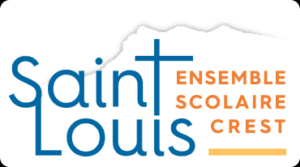
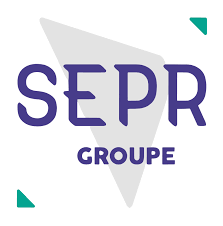
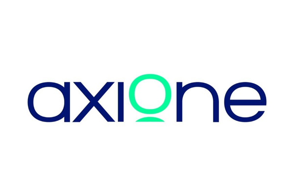
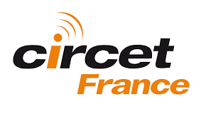

Qui suis-je, quelles sont mes qualités, mes compétences et les outils que je maîtrise.
À propos de moi
Curieux et impliqué, je cherche constamment à développer mes compétences et à approfondir ma compréhension des systèmes informatiques.
Passionné par l'informatique et les nouvelles technologies, je m'intéresse particulièrement aux domaines des réseaux et de la cybersécurité. Mon objectif est de poursuivre après le BTS SIO SISR vers une spécialisation en cybersécurité.
Parcours scolaire
Mon parcours de formation, du baccalauréat professionnel au BTS SIO option SISR.

Crest (26)
Baccalauréat Professionnel Systèmes Numériques — obtenu avec Mention Bien. Premières bases en électronique, informatique, réseaux et dépannage.

Lyon 3 (69)
BTS SIO — option SISR (Services Informatiques aux Organisations, Solutions d'Infrastructure, Systèmes et Réseaux) en alternance. Administration Windows Server / Linux, réseaux, virtualisation, sécurisation.
Expériences
Mes expériences en entreprise dans le domaine des réseaux et de la fibre optique.

Stage — France
Immersion chez un opérateur d'infrastructures télécoms : suivi de chantiers FTTH / FTTO, mise en service d'équipements actifs, sensibilisation à la qualité de service.

Alternance — Lyon (69)
Alternance en parallèle du BTS SIO SISR chez le leader français des infrastructures télécoms. Interventions sur le réseau fibre optique, déploiement et maintenance d'équipements, diagnostic d'incidents et support technique.
Qualités
Les traits de caractère qui me définissent dans mon parcours étudiant et professionnel.
Je ne lâche pas face à un problème technique : j'analyse, je teste, je persiste jusqu'à trouver la solution.
Je m'informe et j'apprends par moi-même : documentation, tutos, expérimentations à la maison.
Je sais organiser mon travail, gérer les priorités et avancer seul tout en sachant demander de l'aide quand il le faut.
Compétences
Dans le cadre de ma formation en BTS SIO — Option SISR, j'ai développé des compétences en administration systèmes et réseaux, en sécurisation des infrastructures et en gestion des services informatiques.
Outils
Les logiciels, systèmes et services que j'ai utilisés en formation et en entreprise. Passez la souris sur le carrousel pour figer le défilement, puis cliquez sur un logo pour afficher sa description.
CV
Téléchargez mon CV au format PDF pour découvrir mon parcours complet.